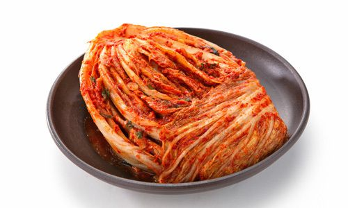

ABOUT
우리 민족의 얼이 담겨 있는 한식에 관해 조금만 더 알아봅시다.
-
자세한 정보
우리 모두 우리 집에서의 한식에 대한 정보를 알아보자.
MORE
-
한식에 관한 연구자 충원
우리 한식에 관한 요리 연구가를 뽑아 한식을 좀 더 풍부하게 만들어보자.
MORE
-
한식의 유통망 확대
한식이 국내에서만 그치지 않고 해외에서도 유명해지도록 유통망을 확대하자.
MORE
Introducion
우리 모두 김치에 관해 조금 더 알아볼까요?

김치, 그 효능은?
전 세계에서 아직도 이 음식을 모르시는 분들이 많을까요?
소화를 도와주고 여드름 및 트러브를 안정시켜주는데 유용한 음식이자
항염증 작용으로 음식의 영향을 받아 생겨난 염증을 완화시키는데도 유용하다.
그러나 아무리 몸에 좋은 식품이라도 적당히 먹는 것이 중요하다는 사실
여러분들이 아실 거라 믿어요.
또한 김치에는 배추,무, 마늘, 고추와 같은 음식으로 만들어져 섬유질이 많이 들어있고
항산화 기능을 하며 면역력을 높여주는 등 탁월한 효능들이 있다.
그러니 여러분들도 김치의 이같은 특징들에 대해 이해하고
이러한 우리나라의 한식에 관해 관심을 가진 후 조사해보는 것이 어떨까요?
일상생활에서 흔하게 접하는 한식들
조금 더 관심을 기울여보는게 어떨까요?
 자세한 정보우리 모두 우리 집에서의 한식에 대한 정보를 알아보자.MORE
자세한 정보우리 모두 우리 집에서의 한식에 대한 정보를 알아보자.MORE 한식에 관한 연구자 충원우리 한식에 관한 요리 연구가를 뽑아 한식을 좀 더 풍부하게 만들어보자.MORE
한식에 관한 연구자 충원우리 한식에 관한 요리 연구가를 뽑아 한식을 좀 더 풍부하게 만들어보자.MORE 한식의 유통망 확대한식이 국내에서만 그치지 않고 해외에서도 유명해지도록 유통망을 확대하자.MORE
한식의 유통망 확대한식이 국내에서만 그치지 않고 해외에서도 유명해지도록 유통망을 확대하자.MORE